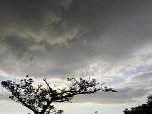
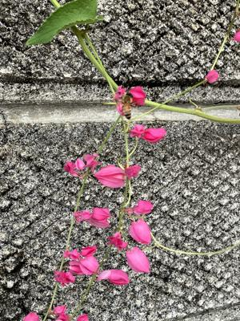

うるがいの話 ある日
最新: 精神疾患【うるがいの話 ある日】とは 一日だけのプログです
『うるがいの話』の最新一日だけのプログで、通信料が少なく経済的だ。カニの画像をクリックすると全ての日付が載る『うるがいの話』サイトを表示します
|
|
【うるがいの話】 うるがい(ｳﾙｶﾞｲ urugai)とは、『もずくがに』の名前でとても大きくなります。 |
|---|---|
|
|
【カミマヤーの話】 猫のことを方言でマヤーといいます。カミマヤー（kamimayaa）とは、神の猫のことです。 |
|
【たながぁの音楽】 たながぁ（ﾀﾅｶﾞｰ tanagaa）とは手長えびのことで、何種類かあり大きいのは車 エビぐらいになります。 |

|
【ぶながぁの話】 ぶながぁ(ﾌﾞﾅｶﾞｰ bunagaa)とは、赤い髪の毛、赤い身体、そして身長は１ｍ２０ｃｍ ぐらい、川の蟹を食べているの目撃された。場所は沖縄県国頭郡大宜味村のと ある村僕の隣近所に住んでいる爺さんから、聞いた話です。 |
|
|
【ギーマの話】 ギーマ(giima)とは、山原の里山に咲くスズランに似た、 花を付けます。実は食べられます、 気が付くと口の周りが紫になっています。 |
2024年09月03日 (火）精神疾患
16:01

お義母さんは、認知症というより精神疾患が原因だろうとヨメが、精神科か
ら帰ったあとでポロリと呟く。確かに、と納得する。
精神障害（精神疾患）
どんな障害？
精神障害とは、精神疾患のため精神機能の障害が生じ、日常生活や社会参加
に困難をきたしている状態のことをいいます。
お義母さんの歩行が、だんだん困難になっていくのが分かる。半年以内には
歩けなくなるかも。看取りができるとく特別養護老人ホームを探せねばと議
論をする。とある特別養護老人ホーム、調べると待ちが２５０名と途方に暮
れる。精神科の先生が、趣味でもあればいいのにねと言ってたよ、塗り絵し
ている？、とヨメが言ったらお義母さんはシカトした。
アサヒカズラ（朝日葛）の蜜を吸う蜜蜂

１５時５４分 ビットコインの総資産 ￥２４、９７８（↑４５７）